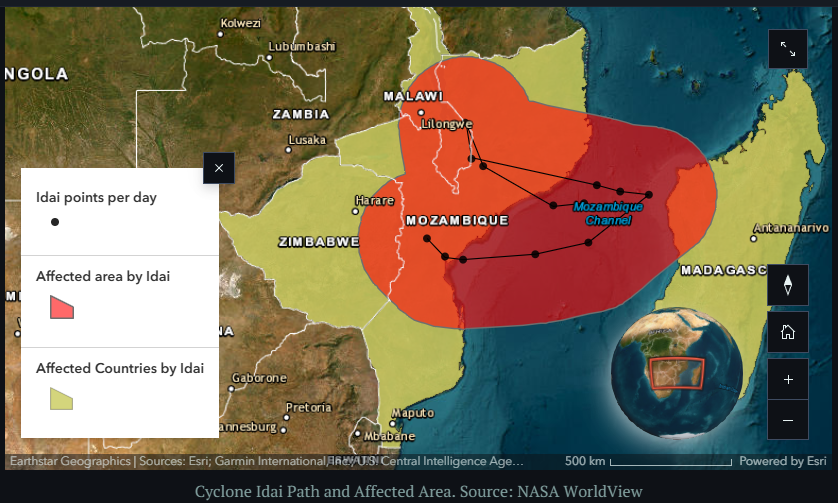
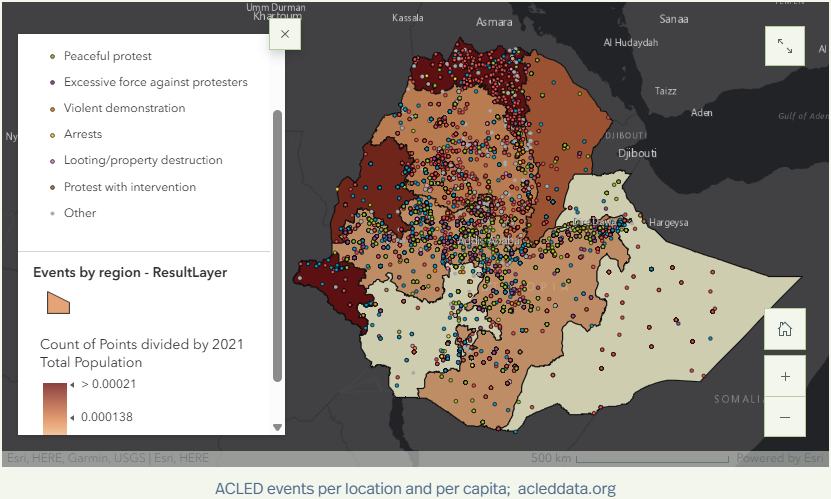
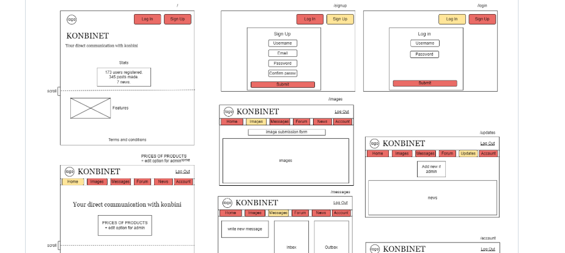
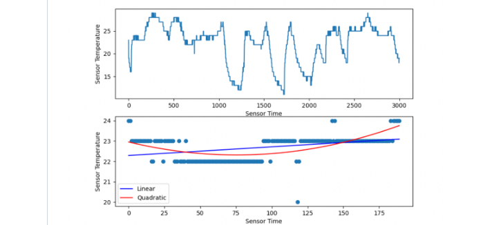
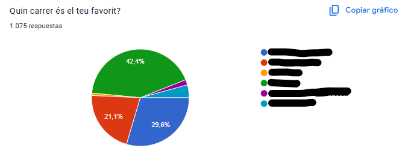

Hi, I'm Paula
A Computer Science & Business student focused on Product Management, and looking for Summer 2026 internships.
GIS Projects: Data-Driven Storytelling
Demonstrating data analysis and strategic communication with ArcGIS Online, Business Analyst, StoryMaps.
ArcGIS Cyclone Idai: Resilience and Response
 Link→ArcGIS Ethiopia: Challenges in a Divided Nation
 Link→Programming Projects: Full-Stack Development
Showcasing foundational technical skills and feature implementation.
Simulated Family Banking System
Documentation withheld to comply with academic integrity policies.
Social Media Website
 Repo→
Distributed Weather Station
 Repo→Product & UX Projects
AV Raval Digital Voting System
UX Research, Rapid Prototyping (May 2025 – July 2025)
Madrid Thrifting Directory
ArcGIS, Web Mapping, Data Visualization (May 2025 – Present)

ISAK Konbini Retail Startup
MVP, Product Iteration (Oct. 2022 – Mar. 2024)
About Me
I am a Computer Science & Business student at Washington and Lee University. I am passionate about applying my analytical and technical skills to Product Management challenges, particularly in defining MVPs, prioritizing features, and translating complex data (like GIS) into clear product value. I am eager to contribute to a team focused on innovation and user impact.